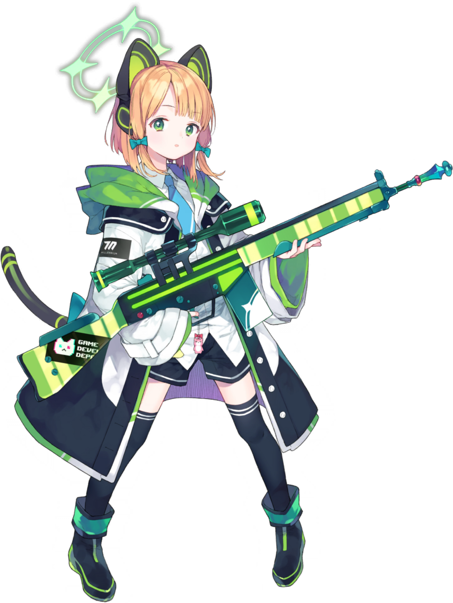

직책 : 아트 디자이너

사이바 미도리는 게임개발부의 아트 디자이너로, 게임에서 접할 수 있는 눈에 보이는 모든 것은 사이바 미도리의 손을 거친 것입니다.
언니인 사이바 모모이와 함께 입부했으며, 자신의 재능을 발휘해 게임을 보기 좋고 완성도 있게 만드는 데 큰 역할을 하고 있습니다.
사이바 미도리의 이 재능은 게임개발부의 모든 게임들이 플레이어에게 다가가게 하는 데 기여하고 있습니다.